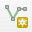
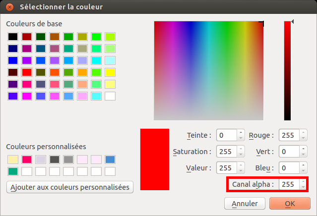
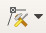

V. Numérisation
V.4 Numériser des lignes
Nous avons vu précédemment comment numériser des points. Comment procéder quand le but est de numériser des lignes ? Nous allons numériser des fleuves de la carte de l'île d'Oahu.
Création d'une couche de lignes
Reportez-vous à la partie V.1 pour créer une couche de ligne, en lui donnant :
- le nom fleuves_oahu.
- le type de géométrie polyligne
- un seul champ de type texte, de longueur 80, nommé nom (il contiendra le nom des fleuves)
Vérifiez que cette couche soit bien chargée dans votre projet, ainsi que la carte Oahu_Hawaiian_Islands_1906_wgs84.tif.
Ajout d'une ligne
Première ligne
Zoomez sur un fleuve, par exemple dans l'ouest de l'île, dans la région de Makaha :
{kind=link}
{kind=link}
Passez en mode édition pour votre couche de fleuves.
Cliquez sur l'icône Ajouter une entité linéaire. Attention, elle ressemble beaucoup à l'icône pour créer une nouvelle couche shapefile !
Vous remarquerez que cette icône varie en fonction du type de couche éditée : point, ligne ou polygone.
Cliquez sur le début du fleuve pour créer un premier sommet, puis rajoutez d'autres points à votre ligne. Pour terminer, faites un clic-droit n'importe où.
{kind=link}
Quelques astuces
- Si pendant la numérisation vous avez des difficultés à voir votre ligne : menu Préférences → Options → rubrique Numérisation : réglez l'épaisseur de la ligne, par exemple 2, et la couleur. Pour la couleur  , n'oubliez pas de mettre le canal alpha, c'est-à-dire la transparence, à 255 pour éliminer toute transparence (une fois la ligne terminée, elle prend le style spécifié dans les propriétés de la couche)
- Supprimer le dernier point créé : touche suppr ou retour arrière (backspace)
- Se déplacer tout en numérisant : utilisez les flèches du clavier, ou bien maintenez la molette de la souris ou la touche espace enfoncée et bougez la souris
- Abandonner la ligne en cours : terminez-la avec un clic droit, puis si les fenêtres de saisie d'attributs sont activées cliquez sur annuler, sinon utilisez ctrl + z
Modification du tracé d'une ligne
Il est possible de modifier le tracé d'une ligne existante en déplaçant des sommets, en en rajoutant ou supprimant.
Vérifiez que vous êtes bien en mode édition pour la couche de fleuves. Sélectionnez-la dans la table des matières, puis cliquez sur l'icône Outil de nœud.
Survolez une ligne existante : les sommets prennent la forme de ronds rouges.
{kind=link}
Si vous survolez un sommet, il devient plus gros. Vous pouvez alors :
- le déplacer en cliquant une première fois sur le sommet puis en cliquant à l'emplacement de votre choix
- le supprimer en cliquant une première fois sur le sommet puis en appuyant sur la touche suppr
- rajouter un sommet : double-cliquez sur la ligne à l'endroit où vous voulez créer un sommet puis cliquez là où vous désirez placer ce sommet.
Une fois vos modifications terminées, n'oubliez pas de quitter le mode édition en enregistrant vos modifications.
Rendez-vous au chapitre suivant pour numériser des polygones !
chapitre précédent chapitre suivant
haut de page